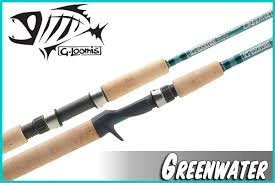
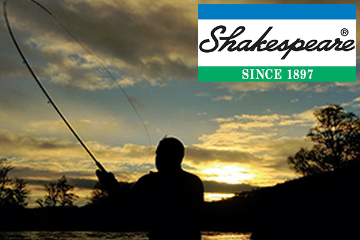

I am mainly going to talk about two brands of rods because there are hundreds of brands and there is not enough time to talk about them all.
The two rods I am going to talk about are G. Loomis Green-water and Shakespeare.
G. Loomis Green-water
The G. Loomis Green-water is my personal favorite rod. They are very lightweight and easy to cast with.
The length of the rod depends on what you buy, they come in all different sizes for different types of fishing. G. Loomis
are green and thin rods depending on the length. They range from $200-$500 per pole. If taken care of properly they will last you years.

Shakespeare
Shakespeare is like the bottom of the food chain. They are not very strong and they come in two pieces. When the rods are two pieces they become
even less reliable because they can come apart. The reels that come with the rod breaks constantly. The line gets tangled and it breaks. They range
from $20-$100 per rod. Even if taken care of properly they don't last that long.
